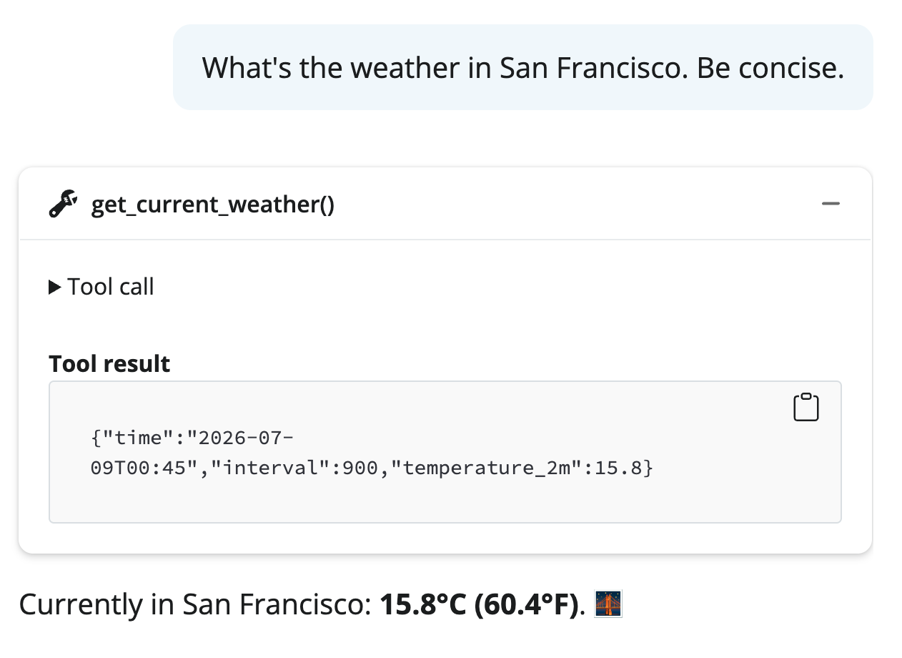
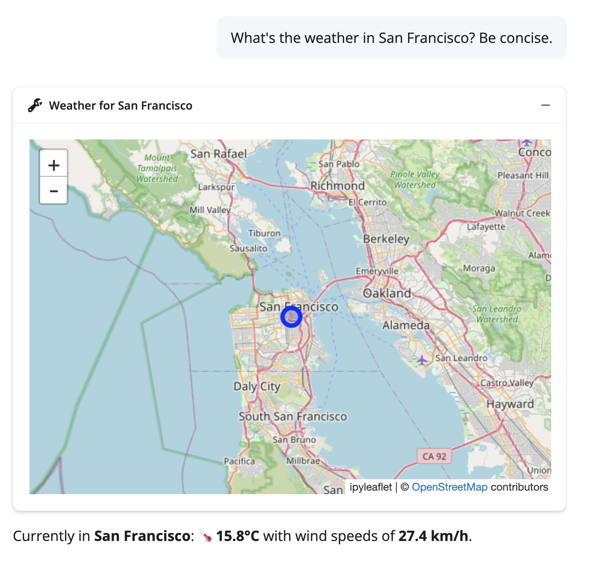

Building chatbots with chatlas and shinychat
.app() methodchat.app() – a working chatbot in 1 line of code.chatlas + shinychat provides a delightful UX, but you could also:
chatlas with your own frontend (e.g., Streamlit, FastAPI, etc.)shinychat with your own backend (e.g., LangChain, Pydantic AI, etc.)shinychat: high-level API.app() is a thin wrapper around shinychat. It’s basically just:
shinychat: low-level APIshinychat has a low-level API that gives you full control over the chat.
import chatlas as ctl
from shinychat.express import Chat
chat = Chat("chat")
chat.ui()
client = ctl.ChatBedrockAnthropic()
@chat.on_user_submit
async def handle_user_input(user_input: str):
# This next line could also be a LangChain chain,
# Pydantic AI call, or any generator.
response = await client.stream_async(user_input)
await chat.append_message_stream(response)client= gives you for free

Main idea: Return ContentToolResult with a ToolResultDisplay.
shinychat uses this to display rich tables and visualizations in the chat. The LLM sees the raw data, user sees a polished display.
We often associate LLMs with chat, but they can be used for any interactive app.
We won’t dwell on this, but here are a couple examples:
By default, tool results show as collapsible text. But you can make them beautiful.
SCREENSHOT: side-by-side comparison —
(left) default tool result display (plain collapsible text)
(right) custom ToolResultDisplay with icon, title, and formatted markdown
from chatlas import ContentToolResult
from shinychat.types import ToolResultDisplay
import faicons
def get_weather(lat: float, lng: float, location: str) -> ContentToolResult:
"""Get the current weather for a location.
...
"""
data = call_weather_api(lat, lng)
return ContentToolResult(
value=data, # what the LLM sees
extra={
"display": ToolResultDisplay(
title=f"Weather: {location}",
icon=faicons.icon_svg("cloud-sun"),
markdown=f"**{data['temp']}°C** — {data['condition']}",
)
},
)SCREENSHOT: a shinychat conversation showing a custom tool display —
the weather card with icon, title, and formatted content
embedded naturally in the chat flow